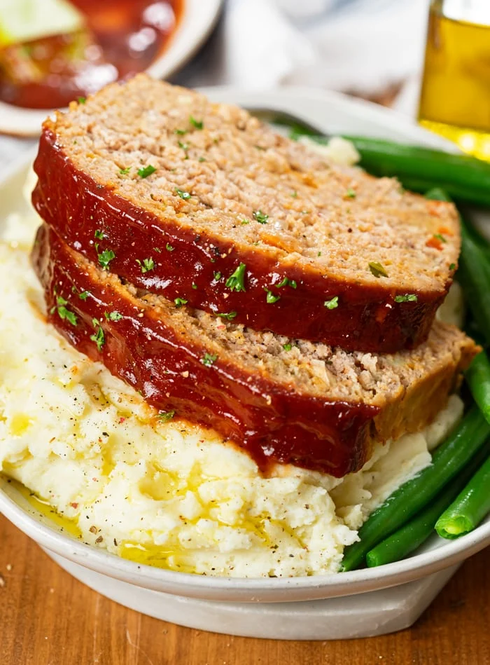

Meatloaf

Description
This is meatloaf
white people love this shit
Ingredients
- 1 Tablespoon butter
- 1/2 cup yellow onion
- 1/2 cup bell pepper
- 3 cloves garlic
- 2 eggs
- 2/3 cup half and half
- 2 teaspoons yellow mustard
- 2 teaspoons ketchup
- 2 teaspoons BBQ sauce
- 1 Tablespoon Worcestershire sauce
- 3/4 teaspoons salt
- 1/2 teaspoon pepper
- 2/3 cup Italian breadcrumbs
- 1 cup cheddar cheese
- 2 pounds ground turkey
Glaze for Topping
- 1/2 cup ketchup
- 1/2 cup bbq sauce
Steps
- Preheat the oven to 325 degrees.
- Melt the butter in a small saucepan over medium heat. Sauté the onions and peppers for 4 minutes. Add the garlic and sauté for 1 more minute. Remove from heat once nice and soft. Let it cool.
- Whisk the eggs in a large bowl. Add the half and half, mustard, ketchup, BBQ Sauce, Worcestershire sauce, cheese, salt, and pepper and stir to combine.
- Stir in the breadcrumbs, then add the cooled onions/peppers/garlic.
- Add the turkey and gently mix until just combined. Don’t overwork the meat or it will become tough.
- Add the turkey mixture to a lightly greased meatloaf pan.
- This part can be tricky but worthwhile: Use a silicone spatula and create space around the perimeter of the pan that’s about the width of your finger. Spread any excess turkey from the sides onto the top of the meatloaf. This creates airflow around the pan which results in a nice outer crust and a juicier loaf. (See process shots in post above for visual.)
- Combine the ketchup and BBQ Sauce and spread half of it over the meatloaf.
- Place the meatloaf pan on a baking sheet to catch any overflow.
- Bake for 45 minutes. Remove and top with remaining ketchup/BBQ sauce.
- Bake for an additional 35-40 minutes or until the internal temperature reads 155 degrees.
- Remove and let it rest in the loaf pan for 15 minutes prior to slicing in. It will increase an additional 8-10 degrees during this time.
Back to Homepage